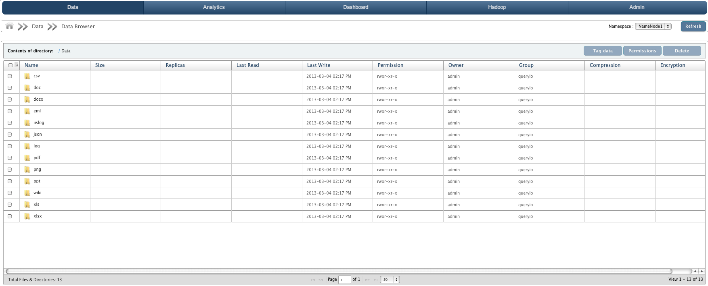

Big Data Browser
In this chapter
This chapter explains how to access data stored on the cluster and perform operations on data.
How to access data
Data Browser is a file explorer. It allows you to access all the directories and files stored in QueryIO.
Files and folders displayed are retrieved from all the DataNodes in the cluster. By default, data browser shows all the files and directories in root directory i.e "/" and allows you
to access files or navigate through the directories.
Using Data Browser, you can also download files from HDFS to your local file system.

Data Browser Details
Data browser displays various details about file and directories:
- NameNode: The data from the cluster belonging to the selected namenode will be displayed.
- Contents of Directory: It displays the path of the current directory being accessed. By default, it is "/". But as you navigate through the directories, it gets updated and displays the path of the current directory.
You can click on any directory in the path to access it.
- It displays the current directory details in a tabular form as:
- Name: Names of the files and directories in the current directory.
- Size: Size of the file.
- Replicas: Number of replicas of file created.
- Last Read: Time when the file was last read.
- Last Write: Time when the file was last modified.
- Permissions: Access permissions on the file or directory. Permissions are displayed in unix format.
- Owner: Owner of the file of directory.
- Group: The group of the owner of the file.
- Compression: Type of compression that has been applied.
- Encryption: Type of encryption that has been applied.
- Data browser allows you to view 25, 50, 100 or 200 files on single page. If there are more files than a page can accommodate, they can be viewed by changing page numbers.
- It also provides a refresh button to reload the grid.
- You can also sort the data according to any of the attribute details. To sort data, click on the attribute headers.
- Number of files and directories of current folder is displayed at left bottom.
Delete File/Directories
Select check-box against the file or directory to be deleted and click on Delete button.
Configure Permission
User can configure file sharing permissions by clicking Configure Permission. For more details about file sharing and settings, click here.
Copyright © 2017 QueryIO Corporation. All Rights Reserved.
QueryIO, "Big Data Intelligence" and the QueryIO Logo are trademarks
of QueryIO Corporation. Apache, Hadoop and HDFS are trademarks of The Apache Software Foundation.